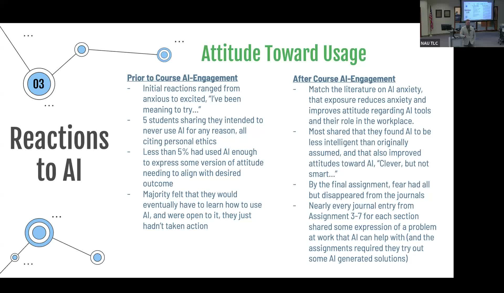

AI Anxiety and Technology Acceptance Among Educational Leaders
Studying how K-12 and higher ed leaders emotionally navigate AI adoption using journal entries and the Technology Acceptance Model.
Presented by Blue Brazelton, Faculty in Educational Leadership, NAU
About This Project
When ChatGPT launched in late 2022, many educational leaders reacted with fear, skepticism, or outright refusal. Blue Brazelton, whose research sits at the intersection of technology and education, wanted to understand the emotional and psychological factors driving those reactions. Drawing on Davis's Technology Acceptance Model, which centers perceived usefulness, perceived ease of use, attitude, and behavioral intention, Brazelton studied how K-12 and higher education leaders were actually processing the arrival of generative AI in their professional lives.
The study analyzed over 350 journal entries from 52 graduate students enrolled in two sections of CCHE 590 (Technology Fluency and Leadership) and one section of CCHE 750 (Digital Contexts of Higher Education), the majority of whom were working full-time as school administrators or college faculty. The journals tracked how attitudes shifted across the semester as participants moved from initial anxiety toward more nuanced engagement. By the final assignments, fear had nearly disappeared from the entries and most participants had identified specific professional problems where AI could help. The project underscores that exposure reduces anxiety and that giving educational leaders structured time to wrestle with AI in a low-stakes environment can shift their stance from avoidance to informed adoption.
Project Highlights

